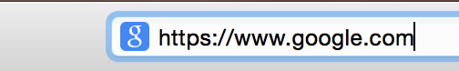
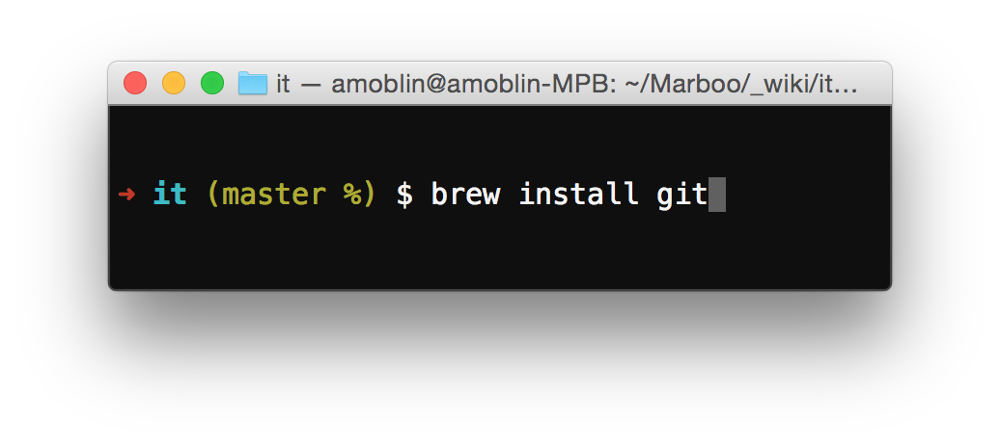
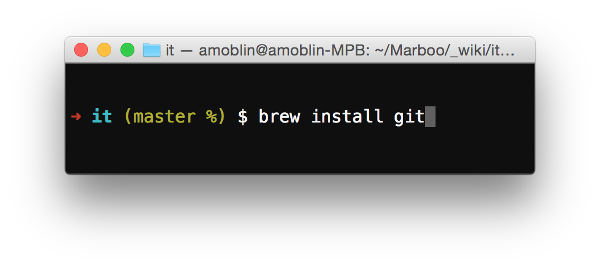
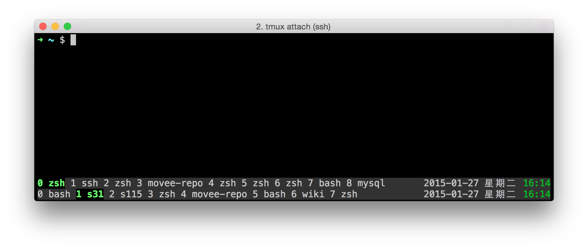

磨刀
POSIX
Terminal

Babun

Readline

 

通用快捷键
| 快捷键 | 功能 |
|---|---|
| Ctrl-a | 移动光标到行首 |
| Ctrl-e | 移动光标到行尾 |
| Ctrl-b | 移动光标到前一个字符 |
| Ctrl-f | 移动光标到后一个字符 |
| Ctrl-h | 删除光标前字符 |
| Ctrl-d | 删除光标后字符 |
| Ctrl-k | 删除到行尾 |
Readline Shortcuts
| Ctrl-b | Move the cursor | one character | ⇦ to the left | |
| Ctrl-f | Move the cursor | one character | ⇨ to the right | |
| Alt-b | Move the cursor | one word | ⇦ to the left | |
| Alt-f | Move the cursor | one word | ⇨ to the right | |
| Ctrl-a | Move the cursor | ⇤ to the start of the line | ||
| Ctrl-e | Move the cursor | ⇥ to the end of the line |
| Ctrl-d | Delete | the character | underneath the cursor |
| Ctrl-u | Delete | everything | ⇤ from the cursor back to the line start |
| Ctrl-k | Delete | everything | ⇥ from the cursor to the end of the line |
| Alt-d | Delete | word | ⇨ untill before the next word boundary |
| Ctrl-w | Delete | word | ⇦ untill after the previous word boundary |
| Ctrl-y | Yank/Paste | prev. killed text | at the cursor position |
| Alt-y | Yank/Paste | prev. prev. killed text | at the cursor position |
| Ctrl-p | Move in history | one line | ⇧ | before | this | line | |||||
| Ctrl-n | Move in history | one line | ⇩ | after | this | line | |||||
| Alt-> | Move in history | all the lines | ⇩ | to | the | line | currently | being | entered | ||
| Ctrl-r | Incrementally search the line history | ⇧ | backwardly | ||||||||
| Ctrl-s | Incrementally search the line history | ⇩ | forwardly | ||||||||
| Ctrl-J | End an incremental search | ||||||||||
| Ctrl-G | Abort an incremental search | and | restore | the | original | line | |||||
| Alt-Ctrl-y | Yank/Paste | arg. 1 of | prev. | cmnd | at | the | cursor | position | |||
| Alt-. | |||||||||||
| Alt-_ | Yank/Paste | last arg of | prev. | cmnd | at | the | cursor | position |
Zsh
Vim/Emacs
Git
Gitolite
Git Flow
Screen/Tmux
Markdown/Org
Gollum
Make/Rake
Package Manager
- Yum
- Aptitude
- pact
- NPM
- Composer
- Gem
- easy_install/pip
- CocoaPods
- Bower
- …
Blog
Community
Github, Google code, StackOverflow, V2EX
About Me
- 微博：@amoblin
- Twitter：@amoblin
- Email: amoblin@gmail.com
- https://github.com/amoblin
- Homepage: http://marboo.biz
Q&A